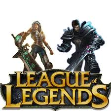
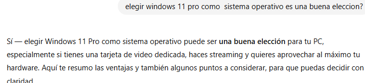
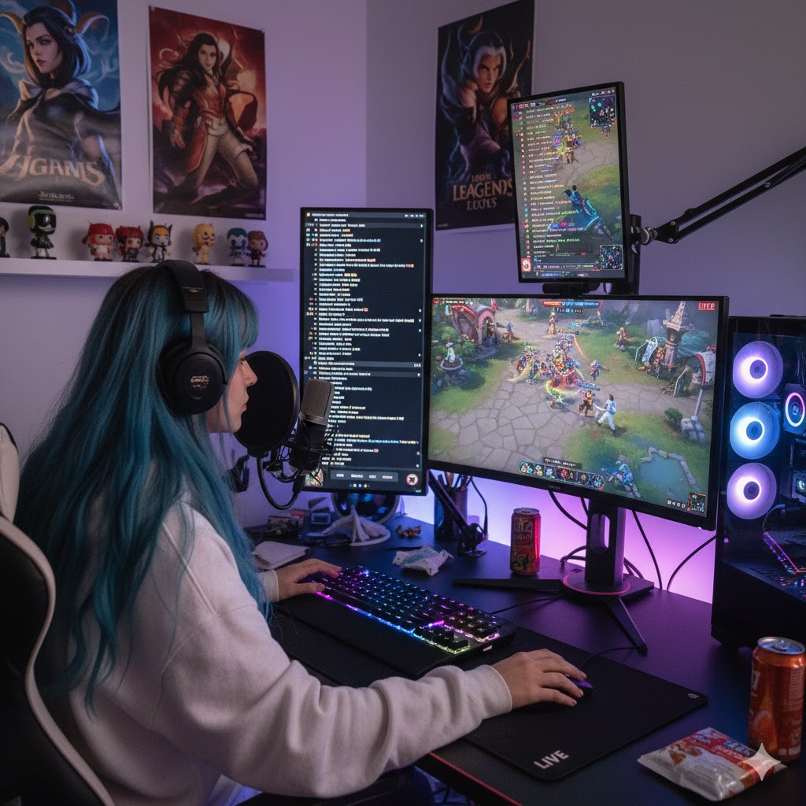

Carrera: Análisis de Sistemas y/o Lic. en Sistemas de Información
Cátedra: Fundamentos de Computación
Título del Trabajo Práctico: Streaming de videojuegos
Profesores: Bioing. Ismael Cassi (ADJ) y Lic. Paolo Orundés Cardinali (JTP)
Integrantes del Grupo:
Giovanni Volpe
Melina Erasun
Kiara Cati
Comisión:
Comisión de los Jueves 17hs
Fecha de Entrega (Final):
31 de octubre
Año Lectivo: 2025
Parte grupal:
Nombre del juego: League of Legends

Descripción de League of Legends:
League of Legends es un videojuego de estrategia en línea multijugador masivo del género MOBA (Multiplayer Online Battle Arena) donde dos equipos de cinco jugadores compiten para destruir la base del equipo contrario, conocida como el Nexo.
Cada jugador controla a un campeón, un personaje único con habilidades y estilo de juego específicos. A medida que avanza la partida, los campeones ganan experiencia, oro y suben de nivel para volverse más fuertes. El objetivo es trabajar en equipo para superar a los oponentes, derribar torres y, finalmente, destruir el Nexo enemigo.
Es un juego competitivo que combina acción rápida con una toma de decisiones estratégica profunda.
Requisitos Mínimos:
Sistema operativo: Windows 10, Windows 11
CPU (Procesador): Intel Core i3-530 o AMD A6-3650
RAM (Memoria): 4 GB
Tarjeta gráfica: NVIDIA GeForce 9600GT, AMD HD 6570, o Intel HD 4600 Integrated Graphics
VRAM: 1 GB
Espacio en disco: 16 GB disponibles en HDD
Software: DirectX v9.0c
Requisitos Recomendados:
Sistema operativo: Windows 10, Windows 11
Procesador: Intel Core i5-550 o AMD A10-5800
RAM: 8 GB
Tarjeta gráfica: NVIDIA GeForce 560, AMD Radeon HD 6950, o Intel HD 520 Integrated Graphics
VRAM: 2 GB
Espacio en disco: 16 GB disponibles en SSD (disco de estado sólido)
Software: DirectX v9.0c o superior
Que es lo necesario para stremear:
1. El Núcleo de Rendimiento: Hardware Potente
El equipo debe ser capaz de ejecutar el juego y el proceso de codificación simultáneamente sin caídas de rendimiento.
Procesamiento (CPU/GPU): Se necesita un procesador de alto rendimiento (Intel Core i7/AMD Ryzen 7 o superior) con múltiples núcleos. Es crucial utilizar el codificador de hardware de la GPU (como NVENC de NVIDIA) para que la tarjeta gráfica se encargue de la codificación del video, liberando a la CPU para el juego.
Memoria RAM: Mínimo de 16 GB de RAM DDR4 para asegurar la multitarea y evitar interrupciones al tener abiertos el juego, el software de streaming y otros programas.
2. Estabilidad de la Red: Conexión y Subida
La estabilidad de la red es fundamental para evitar la pixelación y los cortes en la transmisión.
Velocidad de Subida: Es el requisito más crítico. Necesitas un mínimo de 5-10 Mbps de subida constante, preferiblemente con fibra óptica, para transmitir en Full HD (1080p).
Conexión: Es obligatorio usar una conexión "cableada (Ethernet)". El Wi-Fi introduce inestabilidad y latencia, comprometiendo la calidad del stream.
Bitrate: Debe ajustarse a tu velocidad de subida real y a los límites de la plataforma.
3. Calidad Audiovisual: Periféricos y Producción
El buen audio y video mejoran la experiencia del espectador y la retención.
Audio (Prioridad Máxima): Inversión en un micrófono dedicado (USB o XLR) con patrón cardioide para capturar una voz clara y aislar el ruido de fondo.
Video e Iluminación: Una **webcam 1080p** es suficiente, pero debe complementarse con una buena **iluminación** (como un anillo de luz) para que el rostro se vea nítido y profesional, independientemente de la hora.
4. Software y Gestión
Las herramientas de software coordinan todos los elementos de la transmisión.
Software de Transmisión: Utilizar **OBS Studio** (potente y gratuito) o **Streamlabs** (más sencillo para principiantes) para mezclar y emitir todas las fuentes (juego, cámara, audio).
Personalización: Implementar **overlays** y **alertas interactivas** (para seguidores, suscripciones) es crucial para profesionalizar el canal y fomentar la interacción con la audiencia en tiempo real.
Introduccion
Streaming de Videojuegos
El streaming de videojuegos se ha convertido en uno de los fenómenos más influyentes dentro de la industria del entretenimiento digital.
Esta práctica consiste en la transmisión en tiempo real de partidas de videojuegos, ya sea como contenido de entretenimiento para audiencias en línea
o como una forma de interacción directa entre los jugadores y sus comunidades.
Plataformas como Twitch, YouTube Gaming y Facebook Gaming han permitido que millones de personas no solo
compartan su experiencia de juego en vivo, sino también que construyan comunidades, generen ingresos y desarrollen carreras profesionales como
streamers o creadores de contenido. A su vez, los espectadores pueden interactuar mediante chats en tiempo real, suscripciones, donaciones
y otros sistemas de participación que enriquecen la experiencia tanto del emisor como del público.
El auge del streaming de videojuegos también ha impulsado el crecimiento de los eSports y ha influido en el desarrollo de títulos
pensados específicamente para ser atractivos en este formato. Además, ha democratizado la visibilidad de los jugadores, permitiendo que talentos emergentes
ganen reconocimiento sin necesidad de pertenecer a grandes organizaciones o ligas profesionales.
<<<<<<< HEAD
2. Parte individual
Configuracion de Pc y Justificacion
Melina Erasun
Para poder jugar Lol y transmitir en vivo con buena calidad, arme una computadora que mantiene en su presupuesto minimo de USD1000
Cada componente fue elegido equilibrando precio, rendimiento y confianilidad.
Memoria RAM: DDR5 32Gb 6000Mhz Team Group T-Force Vulcan Black 2x16($151.820)
https://www.venex.com.ar/memorias-ram/desktop/memoria-ram-ddr5-32gb-6000mhz-team-group-t-force-vulcan-black-2x16.html?utm_source=hardgamers&utm_medium=search%20engine
Disco HDD: Disco Rigido Seagate Skyhawk 2TB 256Mb 5400Rpm ($110.370)
https://dinobyte.ar/producto/disco-rigido-seagate-skyhawk-2tb-6gb-s-64mb/?utm_source=hardgamers&utm_medium=search%20engine
Disco SSD: M.2 WD 1TB Black SN850X NVMe PCIe Gen4 x4 ($216.000)
https://gorilagames.com/476697-componentes-de-pc-western-digital-disco-solido-ssd-wd-black-sn850x-1tb-730?utm_source=hardgamers&utm_medium=search%20engine
Fuente:Thermaltake Smart RGB 700W 80 Plus White ($106.000)
https://hftecnologia.com.ar/489615-componentes-de-pc-fuente-gamer-thermaltake-tt-psu-smart-rgb-700w-80-plus-white?utm_source=hardgamers&utm_medium=search%20engine
Mousepad:MOUSE PAD REDRAGON FLICK M 32X27CM($8.450)
https://gorilagames.com/56553-perifericos-redragon-mouse-pad-flick-m-32x27cm?utm_source=hardgamers&utm_medium=search%20engine
Ups:Hikvison ds-ups2000 va pantalla lcd negro ($277.613)
https://www.mercadolibre.com.ar/ups-hikvision-ds-ups2000-2000va-pantalla-lcd-negro/p/MLA40979658?pdp_filters=item_id:MLA2021961002 - is_advertising=true&searchVariation=MLA40979658&backend_model=search-backend&position=1&search_layout=grid&type=pad&tracking_id=8469e5c8-80f3-4809-a2e8-9a05949b3ae3&ad_domain=VQCATCORE_LST&ad_position=1&ad_click_id=OTU4ZTMwNzQtZjIxNS00OGIwLTg3MzktNjI3MGIzNjEyMGYz
Conclusion:
Los componentes que elegi para lograr un equipo moderno, potente y equilibrado. El procesador i5 12600K junto con 32 GB de RAM DDR5 aseguran alto rendimiento y velocidad. La combinación de SSD y HDD brinda rapidez y gran capacidad de almacenamiento. La fuente y el cooler garantizan estabilidad y buena refrigeración, mientras que el gabinete y los periféricos aportan comodidad y estética gamer. En conjunto, es una PC confiable para trabajo, estudio y gaming exigente.
=======
PC de Kiara de escritorio con un presupuesto de 1000 dolares ($1.475.000 ARS aproximadamente)
Yo no estoy de acuerdo con la respuesta, elegí el AMD Ryzen 5 5600G porque me da flexibilidad y un buen equilibrio de rendimiento
Aunque le agregué una placa de video, el procesador es muy bueno para jugar y hacer streaming del LOL en buena calidad
tiene un buen rendimiento por núcleo y por multitarea, consume poca energía y mantiene buenas temperaturas

esta respuesta me ayudo a decidir por el windows 11 pro
Tabla generada con IA
Característica
ADATA XPG Gammix D35 16 GB DDR4 3200
XPG Spectrix D35G DDR4 3200
Capacidad
16 GB (1×16 GB)
16 GB (1×16 GB)
Frecuencia
3200 MT/s
3200 MT/s
Latencia (CAS)
CL16‑20‑20
CL16‑20‑20
Voltaje de operación
1.35 V
1.35 V
Diseño / estética
Disipador perfil bajo, sin RGB
Disipador perfil bajo con RGB
Dimensiones
133.35 × 34 × 5.9 mm
133.35 × 36 × 6.6 mm
Compatibilidad / Extras
Compatible con XMP 2.0
Compatible con XMP 2.0 + RGB
Público objetivo
Rendimiento sólido, diseño discreto
Rendimiento sólido, estética gamer RGB
Para ver si los datos coincidian use VENEX, y los datos que me dio la IA si fueron correctos
Sus caracteristicas son bastantes similares, de todas maneras yo eligiria "Spectrix D35G DDR4 3200" por el RGB
Que es el overclock?
Respuesta IA: El overclock es aumentar la velocidad de funcionamiento de un componente de la computadora, como el procesador o la tarjeta de video, por encima de lo recomendado por el fabricante.
Esto puede mejorar el rendimiento, pero también genera más calor y puede reducir la vida útil si no se hace correctamente.
En lenguaje simple el overclock es aumentar el rendimiento de la pc
Jugando y stremeando LOL hecho con IA

Le pedi a gemini que me generara la imagen de una chica jugando lol desde su pc gamer mientras stremeaba
Conclusion final:
La IA me fue de mucha ayuda, principalmente porque yo no sabia usar git, visualstudio ni html
Detecte errores o informacion poco confiable cuando le pedia caracteristicas de componentes, en esos casos
buscaba el producto en otras paginas y lo comparaba, al igual que cuando me daba links.
Prefiero buscar los datos manualmente cuando se trata de informacion precisa como los precios, compatibilidad, etc.